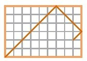
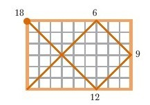
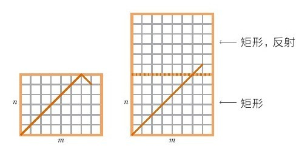
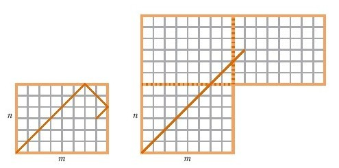
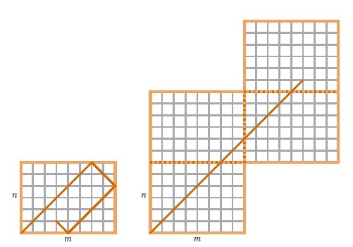
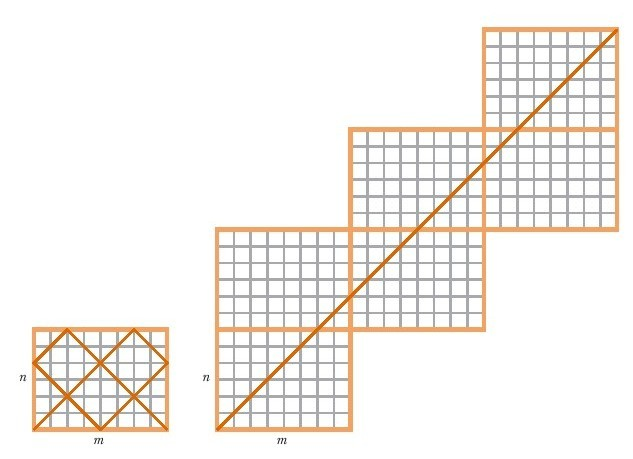
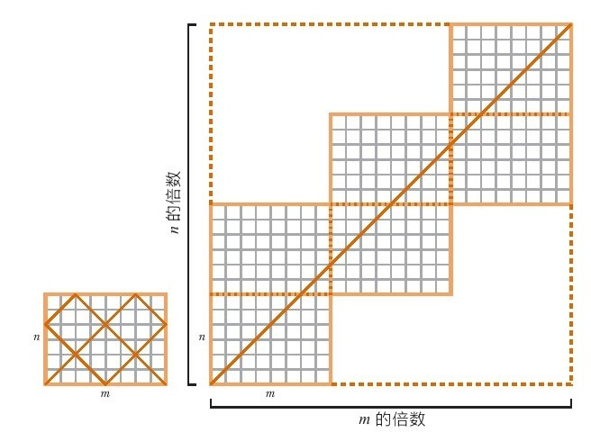
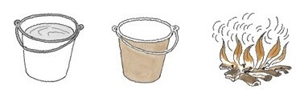
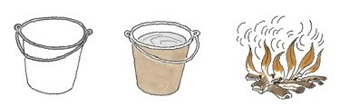

这是灾难性的坠落。从贪吃开始，我们很快堕落到其他罪恶中去。
虚荣
如果你很好，你就会想要表现出来。如果你喜欢表现，你就要先变好，这样才能有所表现。我是这么做的，如果有人问“5329的平方根是多少？”，我能立即回答“是73！”，每个人都会很惊讶。[23]
我也喜欢设宴待客，听人们赞扬我的厨艺。但是，我会与虚荣心作斗争，并且我获得的帮助是来自……
懒惰
假如是为了虚荣为什么要努力工作提升自己？不，我会停下来休息。我会看漫画，做个善良正直的人更令人轻松。
这看起来像是很严肃地反对自我提升
自我提升是虚荣心作祟
虚荣是一种罪
∴自我提升是有罪的
我想这里是存在瑕疵的，而我只是没有精力去寻找。
厨房懒人
厨师培训中有很多减少工作量的方法，例如打蛋、切菜的快速方法等。想一想做千层饼的好方法。
如果要做千层饼，一开始你要在生面团里抹上一层黄油。
然后将结合物铺开。
并且折叠成3层。
这样就形成了3层黄油，4层生面。
再这样折叠3次。每一次黄油的层数就成3倍增加：9层、27层、81层。相应地也会产生10层、28层和82层生面。
只需操作4次就有82层生面了。
懒惰出奇效。
在数学上犯懒
数学家们精通偷懒之道。某一单一定理可以证明无限多的事实。这有一个例子。我们在第六章中研究了一个点在一个矩形中反弹的路径。

咱们一起找出这条路径的长度，不只是在一个矩形，而是在所有矩形中的路径长度。上面给出的这个例子（一个6×9的矩形）中，路径的长度是18（通过路径穿过的正方形的数量测出）。

在这种情况下，路径长度是矩形边长6和9的最小公倍数。但路径长度本来一直就是边长的最小公倍数，无论边长（整数）是多少。如果我们必须逐一通过各个矩形来证明这一点，我们就必须画出无限多的图。相反，我们用一个单一论据足矣。这就是懒惰的作用！

每次我们到达一条边时，我们会在左边这张图中反弹，变成右边图中的一条反射线。

我们这样做的话，右边图中的路径是一条直线。

当反弹结束，

我们会看到右图中的图形是包含在一个正方形中的。这个正方形的边长就是矩形长和宽的倍数。

这就是边长的最小公倍数，对角线第一次到达矩形的一角。
再多一点懒惰
懒惰还有另外一点好处。
我会打壁球。和我一起打过壁球的人中有一些会去上课提高球技。但我不会去。我不会为了玩耍的技能而去做功课。但是自从我每周打一两次壁球后，我的球技得到了提高——但是进步非常缓慢。结果是如今60多岁的我，才处在球技的最佳状态。如果我真的为了游戏玩耍去学习，我可能会在40多岁时就能达到自己的球技高峰，而我现在会成为一个讨人厌的老头，为自己的衰老而变得脾气暴躁，继续絮叨别人已经听厌的自己过去的那些辉煌故事。相反，现在我的那些对手们会因为我的球技比他们预期的略胜一筹而烦恼。
对数学和烹饪来说，有一点是我们需要领会的。如果你在某件事物上投入时间，你就会有所提高。在厨房进行试验，与食材一起游戏、玩耍，你会做出一手好菜。和谜题、游戏一起玩耍，你解答任何数学题的能力都会提高。
有一个关于数学家的笑话，说的是他们在数学上偷懒已经深入骨髓了。
思考以下问题：有2个水桶，一个白色，一个红色。白桶装满了水，而红桶是空的。有一小堆火。

我们问数学家“怎么把火扑灭？”
数学家回答说“把白桶中的水倒到火上”。
现在假设情况略有不同。假设白桶是空的，而红桶装满了水。

我们又问数学家“怎么把火扑灭？”
数学家回答说“把红桶里的水倒进白桶，这样问题就还原到之前我们已经解答过的那个问题上了”。
大部分数学家，不是所有，都懂这个笑话。
吝啬
吝啬可能是一种罪过，但是对烹饪和数学来说它有时是一种推动因素。
在数学里以小搏大是一大优点。两千多年前，欧几里得将所有数学运算简化成五大公设。用这五大公设，欧几里得推导出当时已知的所有数学运算的结果。
多了不起的成就，有人想知道是否可以再简单一些，是否有可能不用五个公设那么多？特别是第五公设有没有可能从前四个推导出来？
这个疑问推动了很多数学研究。直到19世纪时才证明答案是否定的。第五公设不能由其他四个公设证明。
烹饪上的吝啬
让我们一起回到我的青年时代。我20多岁时收入拮据。我喜欢吃比萨（见第七章）。但那时候比萨很贵。比萨当年的地位和现在不同。那时没有全国连锁的比萨店，你只有在时髦、充满异国情调的地方才可以买到比萨。在我的成长过程中，我把比萨看成是兄长辈的食物，是那些大孩子才能得到的食物。
我一直那样觉得，并健康地走入人生中的30岁。
不花钱就有比萨吃——那是我的目标。我为这个目标尝试多年。即使是这样（懒惰），我也没对比萨进行过研究。我只是尝试各种各样的东西，期待灵光乍现的那一刻，一切就都解决了。我大概用了二十年才能做出像样的成品。
基础比萨，16英寸
我是可以现在就把我的比萨配方告诉你，但是我不打算说。在第十二章中有一个更好的配方。
有朝一日，你会为此而感谢我。
好色
对于好色，我不会说太多。我只会简单地告诉你乔治·萧伯纳，这位20世纪最伟大的智者说过的两句话——
没有哪种爱比对食物的爱更真挚。
以及
性爱远不及数学有趣。
好吧，我再多说一点。我会给你讲个笑话[24]。
一个数学家正试着下决心：我该结婚吗？或者我该找个情人。数学家咨询了律师。
“尽一切办法找个情人吧，婚姻引发的法律事物很繁杂，事情简单些你的状况会更好。”
数学家后来又咨询了医生。
“想方设法结婚吧。婚姻更健康。已婚人士寿命长。不要为不确定的事情悲痛、苦恼。”
最后，这个数学家又咨询了另外一位数学家。
“两个都要有。你的配偶会认为你正和情人约会，而你的情人会认为你和配偶在一起，而你就可以解决数学难题了。”
我有很多罪过，但都坦白了这书读起来就没趣了。相反，我们会转向烹饪和数学共有的一个概念——“方法”。